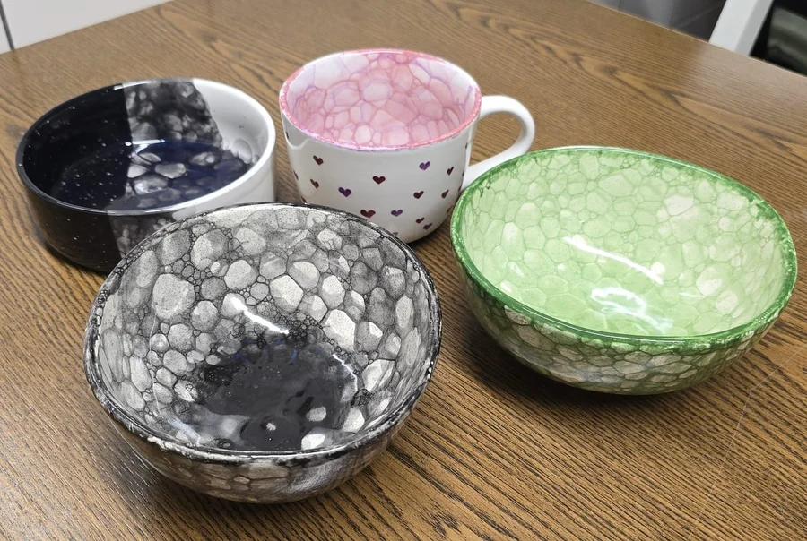
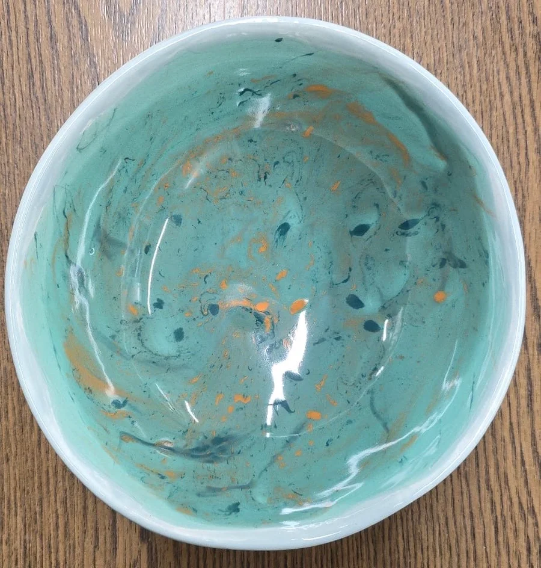
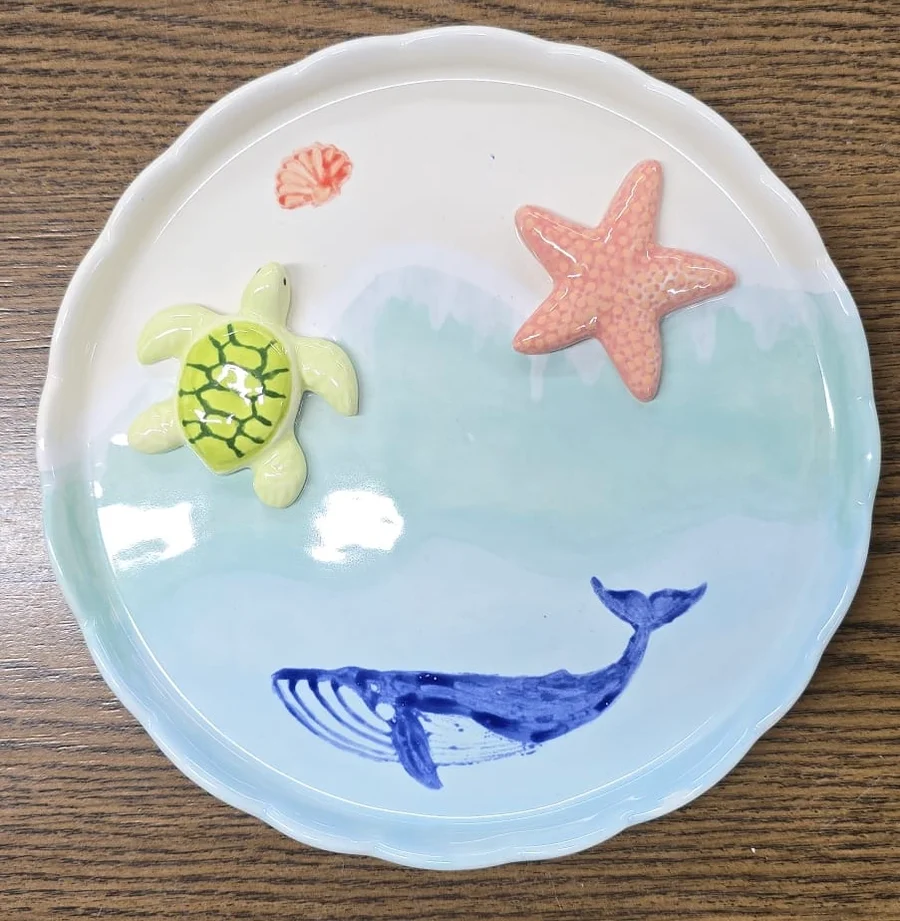
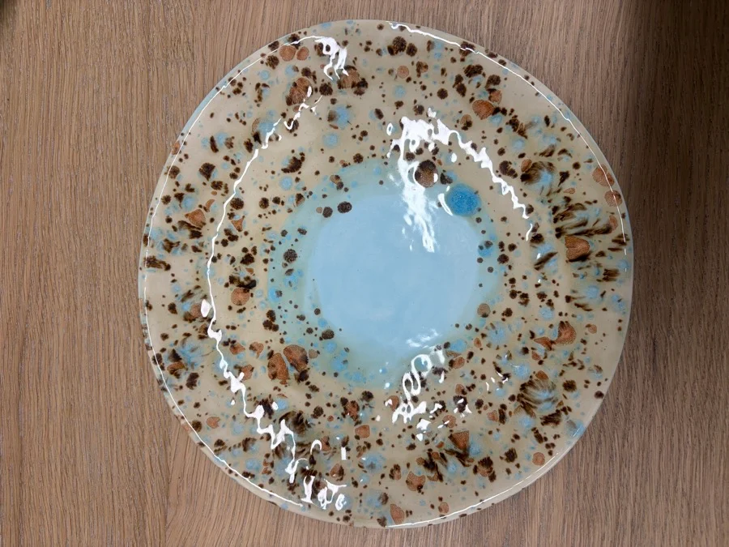
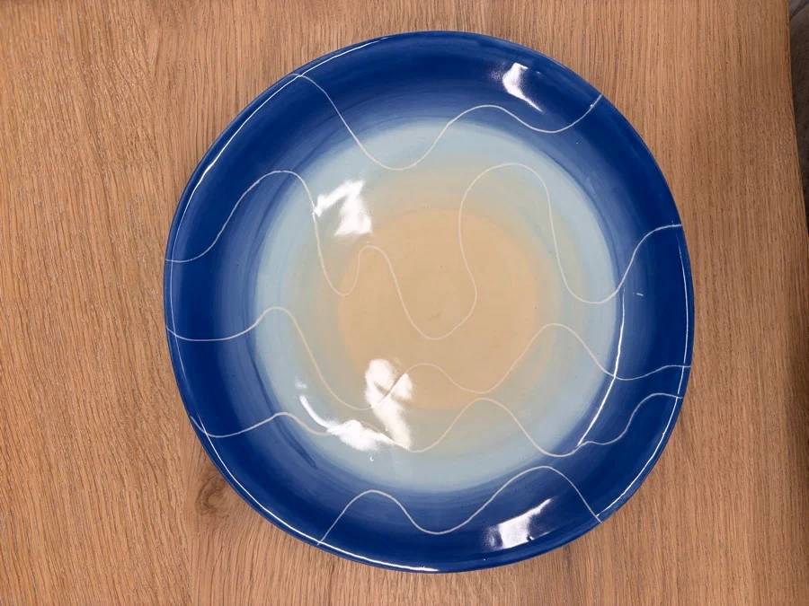

So einfach funktioniert's
Vom weißen Rohling zum glänzenden, spülmaschinenfesten Lieblingsstück.
Rohling aussuchen
Wähle aus über 200 verschiedenen Keramikrohlingen deinen Favoriten: von Tassen und Müslischalen über Teller, Vasen, Kannen bis hin zu süßen Tierfiguren.
Malen & Gestalten
Wir erklären dir alle Farben und Werkzeuge. Suche dir deine Lieblingsfarben aus und experimentiere mit Pinseln, Schwämmen, Stempeln oder Klebebändern.
Glasieren & Brennen
Du lässt dein bemaltes Stück bei uns. Wir tauchen es in eine transparente Glasur und brennen es bei über 1.000 °C in unserem Spezialofen vor Ort.
Glücklich abholen
Nach 5–7 Werktagen ist dein Kunstwerk fertig gebrannt, strahlend glänzend, lebensmittelecht und spülmaschinenfest – bereit zum Mitnehmen!
Beliebte Maltechniken
Mit diesen Techniken gelingt jedem ein unverwechselbares Design – ganz ohne Zeichentalent!

Blubberblasen
Mit einem Strohhalm pusten wir Glasurfarbe mit Seifenlauge auf, bis bunte Blasen über den Rand steigen. Legt man die Keramik sanft darauf, entstehen zarte, organische Schaummuster wie am Meeresstrand.

Marmorieren
Durch sanftes Drehen und Ineinanderfließen mehrerer Farben entstehen edle Marmorierungen. Jedes Stück wird garantiert ein absolutes Einzelstück mit faszinierender Farbtiefe.

Klebemotive & Abklebeband
Klebe geometrische Muster, Streifen, Herzen oder Schriften mit Spezialfolie ab, male einfach mit dem Schwamm darüber und ziehe das Band wieder ab: saubere, messerscharfe Kanten garantiert!

Kristallglasur
Diese besondere Glasur enthält kleine Kristalle, die beim Brennen im Ofen schmelzen und wie kleine bunte Feuerwerke aufplatzen. Ein faszinierender Überraschungseffekt nach dem Brennen!

Farbverläufe & Tupfen
Mit feinen Naturschwämmen lassen sich zarte Farbverläufe tupfen – von Sonnenuntergang bis Regenbogen. Ideal als Hintergrund für Schriften oder Kontrastmotive.
Lust bekommen, es selbst auszuprobieren?
Sichere dir jetzt deinen Lieblingstermin und werde kreativ!
Jetzt Termin buchen